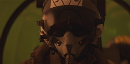

屏幕颜色代表纯蓝色 (或绿色) 屏幕的颜色。当你拉钥匙时，你应该做的第一件事是 选择 屏幕 颜色 .
注意: 如果你按 Alt 采样颜色时, Nuke 无论你在看什么，都要对源图像进行采样。这意味着即使您正在查看哑光、状态或合成，您也可以选择蓝屏颜色。
提示: 您可以通过 Ctrl / Cmd 在查看器中单击鼠标右键。
选择的 屏幕 颜色 创建用于在背景上合成前景的屏幕遮罩。它还设置了 屏幕 余额 绝望的前景。
的 屏幕 颜色 是单一颜色。它有一个主要成分，蓝色或绿色，并且有一个饱和度。一旦选择了屏幕颜色，Keylight 将分析图像中的所有像素，并将这些像素中的主要分量的饱和度与相应的屏幕颜色饱和度进行比较。Keylight 使用这种比较来做两件事。
| 1。 | 它计算该像素的透明度，并将其放入 alpha 通道。 |
| 2. | 它从像素中移除屏幕颜色，这一过程被称为 despilling。 |
提示: 值得取样选择屏幕 (蓝色或绿色) 颜色并查看结果。选择不同的颜色会产生不同的结果。
如果图像中像素的饱和度与屏幕颜色一样强或更大，那么它将是来自蓝屏背景的像素, 该像素设置为完全透明和黑色。见下图。
|
|
| 蓝屏像素将 alpha 设置为零。 |
如果像素的饱和度小于屏幕颜色，那么它将是前景对象的边缘，我们从像素中减去一些屏幕颜色 (despilling) 并将图像设置为半透明。见下图。
|
|
| 边缘像素给出部分 alpha。 |
如果像素中的主要成分与屏幕颜色的主要成分不同，我们有一个前景像素，alpha 设置为完全不透明。像素颜色未修改。见下图。
|
|
| 前景像素给出完整的 alpha。 |
注意: 你应该注意到 屏幕 颜色 是单一颜色。你没有选择很多被键控的颜色。
偏见是什么？Keylight 中的偏置最初是为电影《执行决定》中的一个镜头而开发的。前景由红色棕色组成，但是各种因素的组合导致 “绿色屏幕” 被点亮，因此它的主要成分实际上是略红的。

那么当我们选择屏幕颜色时会发生什么？因为屏幕是 “红色” 的，就像前景一样，我们的飞行员最终被按下键，如下所示。
这不是一个很好的结果，我相信你会同意，并且对卑微的程序员施加了很大的压力来解决这个问题。
解决这个问题的一个方法是手动对图像进行颜色校正，以便背景是正确的绿色，从这个校正的图像中拔出钥匙, 然后 “取消更正” 结果，以便前景颜色与原始颜色匹配。更正后的图像看起来类似于下面所示的图像。绿色屏幕现在是强烈的绿色，不同于前景色。注意飞行员面具上的红色石膏已经被移除，变成了中性灰色。

这实际上是 Keylight 开发人员绕过这个问题的方式。他们引入了 “bias” 颜色的概念，这是一种从源图像和屏幕颜色中删除的颜色转换，然后从修改后的图像中提取一个键, 然后颜色投回来。本质上，这可以自动完成上述工作，但是，它是以一种根本不会减慢键光的方式完成的。
对于我们的行政决策镜头，一个合适的颜色是源镜头中飞行员面具上的红色。设置我们的偏见，现在给我们更好的结果，如下所示。
事实也证明，偏见颜色实际上对于没有强投射的情况很有用，通常在键的边缘有一些颜色溢出。通过将偏见设置为出现在前景边缘附近的主颜色 (通常是肉色调或头发色调)，您可以允许 Keylight 更好地区分前景和背景。
要拾取偏置颜色，请单击 “” 旁边的色样 阿尔法 偏见 激活滴管和 Ctrl/Cmd Shift Alt 在图像前景上拖动一个框。方框下的平均颜色用于您选择的偏差。
注意: 如果你按 Alt 采样颜色时, Nuke 无论你在看什么，都要对源图像进行采样。例如，您可能正在查看背景上的蓝屏，但您正在从源图像中选择颜色。
TIP: You can discard sampled pixels by Ctrl / Cmd +right-clicking in the Viewer.
请记住，Keylight 做两件事，计算透明度并从前景中去除屏幕颜色。默认情况下，一种偏置颜色 阿尔法偏差，用于两个操作。这在大多数情况下都很好，例如，上面拍摄的行政决策。
然而，有时你可以选择一个偏见，给出一个伟大的阿尔法，但表现不佳的绝望，和另一个偏见，给出一个伟大的绝望，但一个可怜的阿尔法。想想电视连续剧《梅林》的蓝屏，由左图所示的 CFC 框架提供。
我们选择背景的强烈蓝色，而没有选择 alpha 偏倚，最终选择了右侧显示的可爱的 alpha，但是由于这个键而产生的绝望很差，如下所示。
|
|
|
| 梅林蓝屏。 | 阿尔法不错。 |
提示:
中有几个节点
Nuke
您可以用于泄漏清除。例如，如果您使用的是绿屏图像，则可以在前景图像后添加一个表达式节点，并将绿色通道的表达式字段设置为:
G> (r b)/2？(r b)/2: g
同样，您可以通过将蓝色通道的表达式字段设置为:
B> (r g)/2？(r g)/2: b

您也可以使用 HueCorrect 节点进行 despill。有关更多信息，请参见
仅校正色调
.
我们可以选择一个阿尔法偏见来获得更好的绝望，但是这破坏了我们美好的阿尔法。解决这个问题的方法是关闭 使用 阿尔法 偏见 对于 绝望 ,这给了你一个单独的偏差因子，仅用于 despill 计算。如果你再挑 绝望 偏见 从米兰达 · 理查森的头发或肤色来看，你保持了良好的阿尔法，也获得了良好的绝望 (见右边的图)。
|
|
|
|
可怜的绝望。 |
最后一个键，使用独立
|
|
|